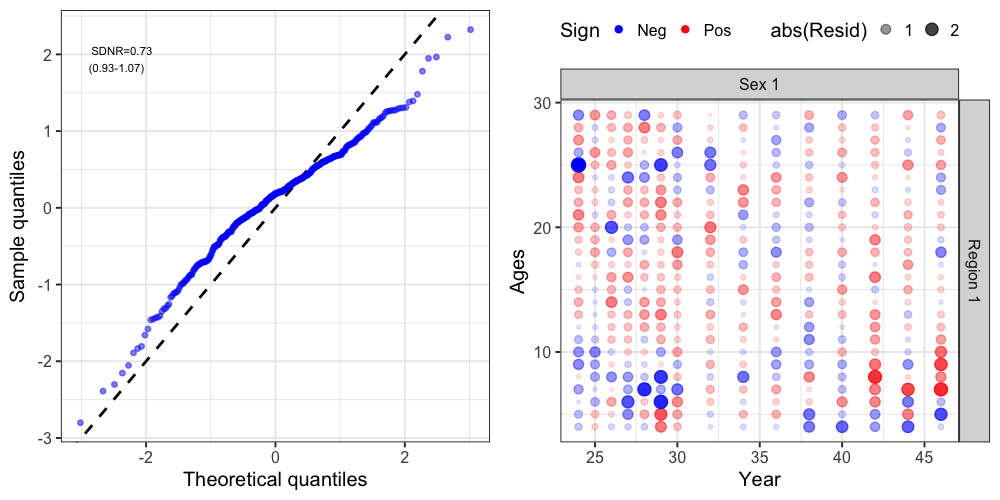
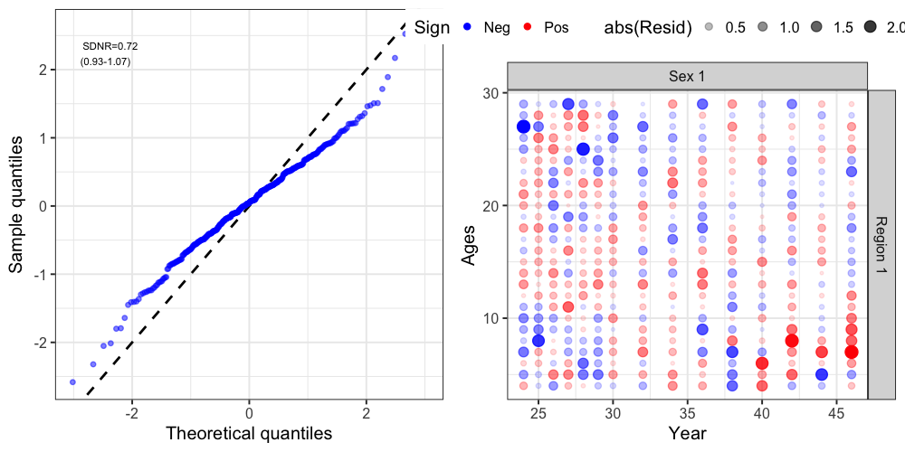
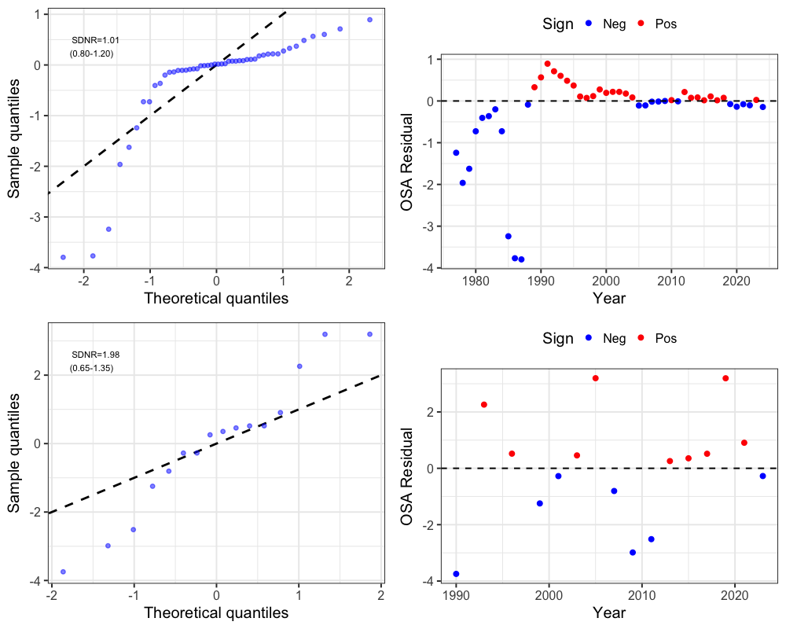
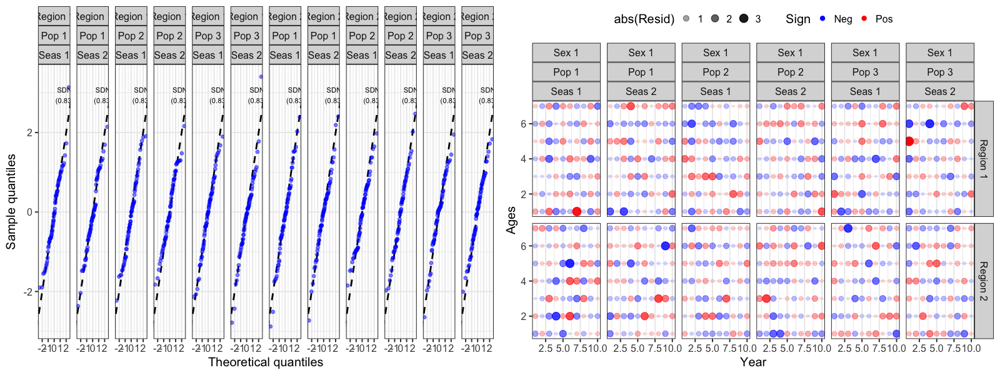
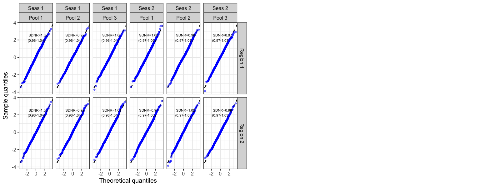
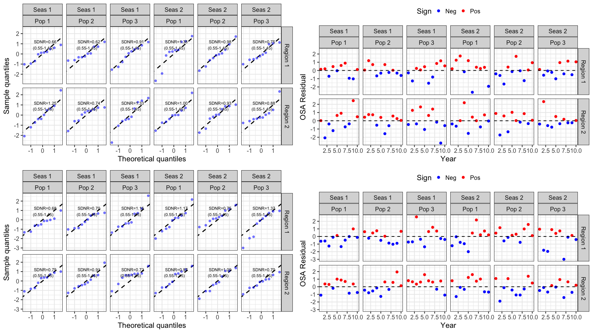

One-Step-Ahead (OSA) Residuals
u_osa_residuals.RmdRaw (Pearson) residuals from compositional, count, and index data can be difficult to interpret given that multinomial/Dirichlet-multinomial proportions are correlated within a year (they must sum to one), tag recapture counts are correlated across cohorts and liberty classes, and even continuous index/catch observations are correlated through the shared state variables (abundance, selectivity) that predict them. One-step-ahead (OSA) residuals remove these correlations by computing, for each observation, the residual of its predictive distribution conditional on all previous observations. Thus, this conditioning should theoretically remove all associated correlaitons and the result should behave like iid standard normal deviates if the model is correctly specified, making standard diagnostics (QQ-plots, SDNR, autocorrelation) meaningful.
SPoRC computes OSA residuals through a single entry
point, get_osa(), which supports two independent
computation modes and every major data type in the package:
| Data type |
get_osa() argument |
Family |
|---|---|---|
| Age/length compositions | comp_source = "FishAge"/"FishLen"/"SrvAge"/"SrvLen" |
discrete (multinomial/DM) or continuous (logistic-normal) |
| Population-specific compositions | add pop = TRUE
|
same as above |
| Discard compositions | add discard = TRUE
|
same as above |
| Conventional tag recoveries | tag = TRUE |
discrete (count or comp-conditioned) |
| Catch | index_source = "Catch" |
continuous (log-normal) |
| Discards | index_source = "Discard" |
continuous (log-normal) |
| Fishery index | index_source = "FishIdx" |
continuous (log-normal) |
| Survey index | index_source = "SrvIdx" |
continuous (log-normal) |
| Any index source, population-specific | add pop = TRUE
|
continuous (log-normal) |
Every get_osa() call returns a list with a single
element, res, a data frame of residuals that can be passed
directly to plot_resids(), which produces a QQ-plot (with
an SDNR annotation) and a second diagnostic plot (a bubble plot for
compositions/tags, or a residual-vs-year plot for index-type data).
Two computation modes
External (post-hoc),
get_osa(obs_mat = , exp_mat = , N = , ...). Works with any
fitted model, no special setup required. Observed/expected arrays
(typically pulled from get_comp_prop()) are handed to the
compResidual package, which builds a small TMB model and
computes OSA residuals independently of how the main model was fit.
Internal (model-based), get_osa(model = , data = , ...).
Internal OSA is only required for composition data and conventional
tagging data. Catch and abundance index observations
(Catch/Discard/FishIdx/SrvIdx) are handled automatically through the
model likelihood and do not require any additional setup. To obtain
internal OSA residuals for composition and/or tagging data, the model
must be re-fit with do_internal_comp_osa = TRUE and/or
do_internal_conv_tag_osa = TRUE in
Setup_Mod_Dim(). These options wrap the relevant
observations in RTMB::OBS() at the point they enter the
model likelihood, allowing RTMB::oneStepPredict() to
operate directly on the fitted model object.
When do_internal_comp_osa = TRUE, the observed
composition proportions (Obs) are internally converted to
integer counts (e.g., ISS × Wt × Obs) before entering the
multinomial or Dirichlet-multinomial likelihood, since these likelihoods
are defined on count data. The resulting counts are rounded to the
nearest integer. This generally has negligible impact when the effective
sample size (e.g., ISS × Wt) is large, but users should be
aware that it can alter the likelihood relative to using continuous
proportions. This is particularly relevant when applying Francis or
other composition reweighting methods, since the weighted effective
sample size determines the counts supplied to the likelihood.
It is strongly recommended that the composition weighting factors
(Wt_*) remain at their default values when using internal
OSA. These weights are applied after the likelihood contribution has
been calculated rather than being passed directly into
dnorm(), dmultinom(), ddirmult(),
or other likelihood functions. Consequently, they are not incorporated
into the one-step-ahead predictive distribution and can produce OSA
diagnostics that are difficult to interpret or inconsistent with the
fitted objective function.
Both modes are demonstrated below on the same real dataset (single-region GOA Dusky Rockfish) so the two can be compared directly, plus a simulated multi-population, tagging-enabled model for the internal-only data types.
External OSA residuals
Any already-fitted model works. get_comp_prop() extracts
observed/expected proportions from the model report, and
get_osa() (no model= argument) computes OSA
residuals from those arrays via compResidual.
input_list <- Setup_Mod_Dim(
years = sgl_rg_dusky_data$years,
ages = sgl_rg_dusky_data$mod_ages,
lens = sgl_rg_dusky_data$lens,
n_regions = sgl_rg_dusky_data$n_regions,
n_sexes = sgl_rg_dusky_data$n_sexes,
n_fish_fleets = sgl_rg_dusky_data$n_fish_fleets,
n_srv_fleets = sgl_rg_dusky_data$n_srv_fleets,
verbose = FALSE
# note: do_internal_comp_osa is NOT set here which is not needed for the
# external path
)
input_list <- Setup_Mod_Rec(
input_list = input_list,
do_rec_bias_ramp = 1,
bias_year = rep(length(sgl_rg_dusky_data$years), 4),
sigmaR_switch = 1,
ln_sigmaR = array(-0.1068576, dim = c(2, input_list$data$n_pop, input_list$data$n_regions)),
rec_model = "mean_rec",
sigmaR_spec = "fix",
init_age_strc = 1,
ln_global_R0 = log(2.7),
t_spawn = sgl_rg_dusky_data$spwn_month
)
input_list <- Setup_Mod_Biologicals(
input_list = input_list,
WAA = sgl_rg_dusky_data$waa_arr,
MatAA = sgl_rg_dusky_data$mataa_arr,
fit_lengths = 1,
SizeAgeTrans = sgl_rg_dusky_data$sizeage,
AgeingError = sgl_rg_dusky_data$age_error_matrix,
M_spec = "fix",
Fixed_natmort = sgl_rg_dusky_data$fix_natmort,
addtocomp = 0.00001
)
input_list <- Setup_Mod_Movement(
input_list = input_list,
use_fixed_movement = 1,
Fixed_Movement = NA,
do_recruits_move = 0
)
input_list <- Setup_Mod_Tagging(input_list = input_list, use_conv_fish_tagging = 0)
input_list <- Setup_Mod_Catch_and_F(
input_list = input_list,
ObsCatch = sgl_rg_dusky_data$ObsCatch,
UseCatch = sgl_rg_dusky_data$UseCatch,
Use_F_pen = 1,
sigmaC_spec = "fix",
Catch_Constant = 0.00001,
ln_sigmaC = array(log(sqrt(1 / (2 * c(rep(2, 15), rep(50, 33))) )), dim = c(input_list$data$n_regions, length(input_list$data$years),
input_list$data$n_seas, input_list$data$n_fish_fleets)),
ln_sigmaF = array(log(sqrt(1 / 4)), dim = c(input_list$data$n_regions, input_list$data$n_seas,
input_list$data$n_fish_fleets))
)
input_list <- Setup_Mod_FishIdx_and_Comps(
input_list = input_list,
ObsFishIdx = sgl_rg_dusky_data$ObsFishIdx,
ObsFishIdx_SE = sgl_rg_dusky_data$ObsFishIdx_SE,
UseFishIdx = sgl_rg_dusky_data$UseFishIdx,
ObsFishAgeComps = sgl_rg_dusky_data$ObsFishAgeComps,
UseFishAgeComps = sgl_rg_dusky_data$UseFishAgeComps,
ISS_FishAgeComps = sgl_rg_dusky_data$ISS_FishAgeComps,
ObsFishLenComps = sgl_rg_dusky_data$ObsFishLenComps,
UseFishLenComps = sgl_rg_dusky_data$UseFishLenComps,
ISS_FishLenComps = sgl_rg_dusky_data$ISS_FishLenComps,
fish_idx_type = c("none"),
FishAgeComps_LikeType = c("Multinomial"),
FishLenComps_LikeType = c("Multinomial"),
FishAgeComps_Type = c("agg_Year_1-terminal_Fleet_1"),
FishLenComps_Type = c("agg_Year_1-terminal_Fleet_1")
)
input_list <- Setup_Mod_SrvIdx_and_Comps(
input_list = input_list,
ObsSrvIdx = sgl_rg_dusky_data$ObsSrvIdx,
ObsSrvIdx_SE = (sgl_rg_dusky_data$ObsSrvIdx_SE / sgl_rg_dusky_data$ObsSrvIdx) / sqrt(1.66),
UseSrvIdx = sgl_rg_dusky_data$UseSrvIdx,
ObsSrvAgeComps = sgl_rg_dusky_data$ObsSrvAgeComps,
ISS_SrvAgeComps = sgl_rg_dusky_data$ISS_SrvAgeComps,
UseSrvAgeComps = sgl_rg_dusky_data$UseSrvAgeComps,
ObsSrvLenComps = sgl_rg_dusky_data$ObsSrvLenComps,
UseSrvLenComps = sgl_rg_dusky_data$UseSrvLenComps,
ISS_SrvLenComps = sgl_rg_dusky_data$ISS_SrvLenComps,
srv_idx_type = c("biom"),
SrvAgeComps_LikeType = c("Multinomial"),
SrvLenComps_LikeType = c("Multinomial"),
SrvAgeComps_Type = c("agg_Year_1-terminal_Fleet_1"),
SrvLenComps_Type = c("agg_Year_1-terminal_Fleet_1")
)
input_list <- Setup_Mod_Fishsel_and_Q(
input_list = input_list,
cont_tv_fish_sel = c("none_Fleet_1"),
fish_sel_blocks = c("none_Fleet_1"),
fish_sel_model = c("logist2_Fleet_1"),
fish_q_blocks = c("none_Fleet_1"),
fish_fixed_sel_pars_spec = c("est_all"),
fish_q_spec = c("fix")
)
srv_q_prior <- data.frame(region = 1, block = 1, fleet = 1, mu = 1, sd = 0.447213595)
input_list <- Setup_Mod_Srvsel_and_Q(
input_list = input_list,
cont_tv_srv_sel = c("none_Fleet_1"),
srv_sel_blocks = c("none_Fleet_1"),
srv_sel_model = c("logist2_Fleet_1"),
srv_q_blocks = c("none_Fleet_1"),
srv_fixed_sel_pars_spec = c("est_all"),
srv_q_spec = c("est_all"),
Use_srv_q_prior = 1,
srv_q_prior = srv_q_prior,
t_srv = array(0, dim = c(input_list$data$n_regions, input_list$data$n_seas, input_list$data$n_srv_fleets))
)
input_list <- Setup_Mod_Weighting(
input_list
)
model <- fit_model(input_list$data, input_list$par, input_list$map,
random = NULL, newton_loops = 3, silent = TRUE)
# Modeled ages span sgl_rg_dusky_data$mod_ages (4:33, 30 ages), but observed
# fishery/survey age compositions only report ages 4:30 (27 bins, an
# ageing-error offset), comp bin labels use the *observed* bin range.
obs_age_bins <- 4:30
comp_prop <- get_comp_prop(input_list$data, model$rep,
age_labels = obs_age_bins,
len_labels = sgl_rg_dusky_data$lens,
year_labels = sgl_rg_dusky_data$years)
fishages_ext <- get_osa(
obs_mat = comp_prop$Obs_FishAge_mat,
exp_mat = comp_prop$Pred_FishAge_mat,
N = input_list$data$ISS_FishAgeComps[1, which(input_list$data$UseFishAgeComps[,,1,1] == 1), 1, 1, 1] *
unique(input_list$data$Wt_FishAgeComps[1, which(input_list$data$UseFishAgeComps[,,1,1] == 1), 1, , 1]),
years = which(input_list$data$UseFishAgeComps[,,1,1] == 1),
fleet = 1,
bins = obs_age_bins,
seas = 1,
comp_type = 0, # aggregated across sex/region
bin_label = "Ages"
)
resid_ext <- plot_resids(fishages_ext)
resid_ext[[1]] # QQ-plot with SDNR
resid_ext[[2]] # bubble plot of residuals by year x age
Internal OSA residuals
Composition and index data
Refitting the same Dusky Rockfish model with
do_internal_comp_osa = TRUE switches on
RTMB::OBS() tracking for every composition source, plus
(unconditionally, no extra flag needed) Catch,
Discard, FishIdx, and SrvIdx.
get_osa() is then called with
model =/data = instead of
obs_mat =/exp_mat =.
input_list <- Setup_Mod_Dim(
years = sgl_rg_dusky_data$years,
ages = sgl_rg_dusky_data$mod_ages,
lens = sgl_rg_dusky_data$lens,
n_regions = sgl_rg_dusky_data$n_regions,
n_sexes = sgl_rg_dusky_data$n_sexes,
n_fish_fleets = sgl_rg_dusky_data$n_fish_fleets,
n_srv_fleets = sgl_rg_dusky_data$n_srv_fleets,
verbose = FALSE,
do_internal_comp_osa = TRUE # the only change needed vs. the external setup
)
input_list <- Setup_Mod_Rec(
input_list = input_list,
do_rec_bias_ramp = 1,
bias_year = rep(length(sgl_rg_dusky_data$years), 4),
sigmaR_switch = 1,
ln_sigmaR = array(-0.1068576, dim = c(2, input_list$data$n_pop, input_list$data$n_regions)),
rec_model = "mean_rec",
sigmaR_spec = "fix",
init_age_strc = 1,
ln_global_R0 = log(2.7),
t_spawn = sgl_rg_dusky_data$spwn_month
)
input_list <- Setup_Mod_Biologicals(
input_list = input_list,
WAA = sgl_rg_dusky_data$waa_arr,
MatAA = sgl_rg_dusky_data$mataa_arr,
fit_lengths = 1,
SizeAgeTrans = sgl_rg_dusky_data$sizeage,
AgeingError = sgl_rg_dusky_data$age_error_matrix,
M_spec = "fix",
Fixed_natmort = sgl_rg_dusky_data$fix_natmort,
addtocomp = 0.00001
)
input_list <- Setup_Mod_Movement(
input_list = input_list,
use_fixed_movement = 1,
Fixed_Movement = NA,
do_recruits_move = 0
)
input_list <- Setup_Mod_Tagging(input_list = input_list, use_conv_fish_tagging = 0)
input_list <- Setup_Mod_Catch_and_F(
input_list = input_list,
ObsCatch = sgl_rg_dusky_data$ObsCatch,
UseCatch = sgl_rg_dusky_data$UseCatch,
Use_F_pen = 1,
sigmaC_spec = "fix",
Catch_Constant = 0.00001,
ln_sigmaC = array(log(sqrt(1 / (2 * c(rep(2, 15), rep(50, 33))) )), dim = c(input_list$data$n_regions, length(input_list$data$years),
input_list$data$n_seas, input_list$data$n_fish_fleets)),
ln_sigmaF = array(log(sqrt(1 / 4)), dim = c(input_list$data$n_regions, input_list$data$n_seas,
input_list$data$n_fish_fleets))
)
input_list <- Setup_Mod_FishIdx_and_Comps(
input_list = input_list,
ObsFishIdx = sgl_rg_dusky_data$ObsFishIdx,
ObsFishIdx_SE = sgl_rg_dusky_data$ObsFishIdx_SE,
UseFishIdx = sgl_rg_dusky_data$UseFishIdx,
ObsFishAgeComps = sgl_rg_dusky_data$ObsFishAgeComps,
UseFishAgeComps = sgl_rg_dusky_data$UseFishAgeComps,
ISS_FishAgeComps = sgl_rg_dusky_data$ISS_FishAgeComps,
ObsFishLenComps = sgl_rg_dusky_data$ObsFishLenComps,
UseFishLenComps = sgl_rg_dusky_data$UseFishLenComps,
ISS_FishLenComps = sgl_rg_dusky_data$ISS_FishLenComps,
fish_idx_type = c("none"),
FishAgeComps_LikeType = c("Multinomial"),
FishLenComps_LikeType = c("Multinomial"),
FishAgeComps_Type = c("agg_Year_1-terminal_Fleet_1"),
FishLenComps_Type = c("agg_Year_1-terminal_Fleet_1")
)
input_list <- Setup_Mod_SrvIdx_and_Comps(
input_list = input_list,
ObsSrvIdx = sgl_rg_dusky_data$ObsSrvIdx,
ObsSrvIdx_SE = (sgl_rg_dusky_data$ObsSrvIdx_SE / sgl_rg_dusky_data$ObsSrvIdx) / sqrt(1.66),
UseSrvIdx = sgl_rg_dusky_data$UseSrvIdx,
ObsSrvAgeComps = sgl_rg_dusky_data$ObsSrvAgeComps,
ISS_SrvAgeComps = sgl_rg_dusky_data$ISS_SrvAgeComps,
UseSrvAgeComps = sgl_rg_dusky_data$UseSrvAgeComps,
ObsSrvLenComps = sgl_rg_dusky_data$ObsSrvLenComps,
UseSrvLenComps = sgl_rg_dusky_data$UseSrvLenComps,
ISS_SrvLenComps = sgl_rg_dusky_data$ISS_SrvLenComps,
srv_idx_type = c("biom"),
SrvAgeComps_LikeType = c("Multinomial"),
SrvLenComps_LikeType = c("Multinomial"),
SrvAgeComps_Type = c("agg_Year_1-terminal_Fleet_1"),
SrvLenComps_Type = c("agg_Year_1-terminal_Fleet_1")
)
input_list <- Setup_Mod_Fishsel_and_Q(
input_list = input_list,
cont_tv_fish_sel = c("none_Fleet_1"),
fish_sel_blocks = c("none_Fleet_1"),
fish_sel_model = c("logist2_Fleet_1"),
fish_q_blocks = c("none_Fleet_1"),
fish_fixed_sel_pars_spec = c("est_all"),
fish_q_spec = c("fix")
)
srv_q_prior <- data.frame(region = 1, block = 1, fleet = 1, mu = 1, sd = 0.447213595)
input_list <- Setup_Mod_Srvsel_and_Q(
input_list = input_list,
cont_tv_srv_sel = c("none_Fleet_1"),
srv_sel_blocks = c("none_Fleet_1"),
srv_sel_model = c("logist2_Fleet_1"),
srv_q_blocks = c("none_Fleet_1"),
srv_fixed_sel_pars_spec = c("est_all"),
srv_q_spec = c("est_all"),
Use_srv_q_prior = 1,
srv_q_prior = srv_q_prior,
t_srv = array(0, dim = c(input_list$data$n_regions, input_list$data$n_seas, input_list$data$n_srv_fleets))
)
input_list <- Setup_Mod_Weighting(
input_list
)
model <- fit_model(input_list$data, input_list$par, input_list$map,
random = NULL, newton_loops = 3, silent = TRUE)
# Composition OSA: comp_source identifies the data source, family whether
# the fitted likelihood for that source is discrete (multinomial/DM) or
# continuous (logistic-normal)
fishages_int <- get_osa(model = model, data = input_list$data,
comp_source = "FishAge", family = "discrete",
bins = obs_age_bins, bin_label = "Ages")
resid_int <- plot_resids(fishages_int)
Index-type sources use index_source instead of
comp_source/family, there is no
likelihood-family choice to make, since these are always continuous
log-normal observations (currently), and no
bins/bin_label since there’s no bin dimension.
plot_resids() returns a QQ-plot paired with a
residual-vs-year plot instead of a bubble plot. The residuals for catch
appear visually ‘odd’ likely due to a change in the variance of the
distribution between early and late periods, reflecting a change in
catch observations for Dusky rockfish during these periods (i.e.,
catches were recorded a a mix of different rockfish species earlier in
the time series, and the variance is adjusted to reflect increased
uncertainty in the catch observation).
catch_int <- get_osa(model = model, data = input_list$data, index_source = "Catch")
srvidx_int <- get_osa(model = model, data = input_list$data, index_source = "SrvIdx")
# index_source = "Discard"/"FishIdx" follow the identical interface (omitted
# here ... this Dusky Rockfish case study sets fish_idx_type = "none" and
# doesn't model discards, so those sources have no data to show)
resid_catch <- plot_resids(catch_int)
resid_srvidx <- plot_resids(srvidx_int)
Population-specific and tagging data
Population-specific composition/index residuals
(pop = TRUE) and conventional tag recovery residuals
(tag = TRUE) require the model to actually have
population-specific and/or tagging data, so this section switches to a
simulated 3-population, 2-region, 2-season model with natal homing
movement and conventional tagging, fit with both
do_internal_comp_osa = TRUE and
do_internal_conv_tag_osa = TRUE. The following code chunk
is purely for demonstration purposes.
input_pop <- Setup_Mod_Dim(
years = 1:sim_obj$n_years, ages = 1:sim_obj$n_ages, lens = sim_obj$n_lens,
n_regions = sim_obj$n_regions, n_sexes = sim_obj$n_sexes,
n_fish_fleets = sim_obj$n_fish_fleets, n_srv_fleets = sim_obj$n_srv_fleets,
n_seas = sim_obj$n_seas, n_pop = sim_obj$n_pop,
natal_region = c(1, 1, 2), verbose = FALSE,
do_internal_comp_osa = TRUE,
do_internal_conv_tag_osa = TRUE
)
model_pop <- fit_model(input_pop$data, input_pop$par, input_pop$map,
random = NULL, newton_loops = 3, silent = TRUE)Population-specific composition OSA (pop = TRUE,
joint-sex in this example):
comp_pop <- get_osa(model = model_pop, data = input_pop$data, comp_source = "FishAge",
pop = TRUE, family = "discrete", bins = input_pop$data$ages, bin_label = "Ages")
resid_comp_pop <- plot_resids(comp_pop)
Conventional tag recovery OSA (tag = TRUE), faceted by
region, recovery season, fleet, and movement/tag pooling group whenever
the residual data span more than one level of each. This is a bit
unwieldy to inspect given the number of dimensions (release cohort,
recapture region, age, year at liberty etc) and so only qqplot’s are
shown for tagging data.
tag_osa <- get_osa(model = model_pop, data = input_pop$data, tag = TRUE)
resid_tag <- plot_resids(tag_osa)
Population-specific index OSA (index_source = +
pop = TRUE):
catch_pop_osa <- get_osa(model = model_pop, data = input_pop$data, index_source = "Catch", pop = TRUE)
srvidx_pop_osa <- get_osa(model = model_pop, data = input_pop$data, index_source = "SrvIdx", pop = TRUE)
resid_catch_pop <- plot_resids(catch_pop_osa)
resid_srvidx_pop <- plot_resids(srvidx_pop_osa)
Other options
get_osa()’s internal mode exposes two further
arguments:
-
osa_method: overridesRTMB::oneStepPredict()’smethodargument. Must be one of"oneStepGeneric","oneStepGaussianOffMode", or"oneStepGaussian", the"cdf"method is deliberately disallowed because it is numerically fragile for the discrete (multinomial/count) likelihoods used here and can silently return mis-calibrated residuals. Defaults to"oneStepGeneric"for discrete composition/tag families and"oneStepGaussianOffMode"for continuous (logistic-normal composition or index-type) families. -
parallel: passed straight through toRTMB::oneStepPredict(parallel = ). Useful for large composition/tag datasets where OSA computation dominates runtime; verified to give numerically identical residuals toparallel = FALSE.
get_osa(model = model, data = input_list$data, index_source = "SrvIdx",
osa_method = "oneStepGaussian", parallel = TRUE)